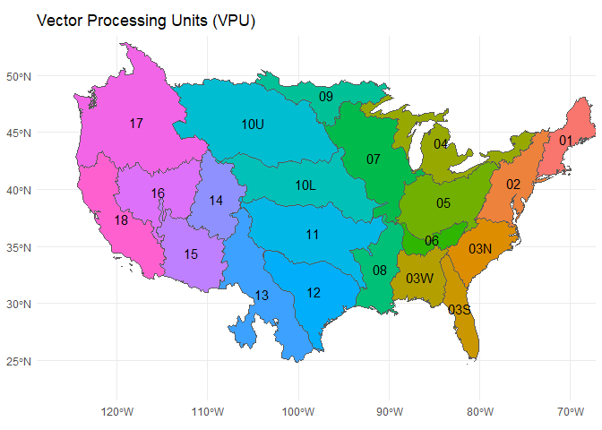

Tools for querying, downloading, and networking both the National Hydrography Dataset (NHD) and NHDPlus datasets.
Installation
or development version from GitHub
This package also requires an installation of 7-zip that can be called via the command line using 7z or 7za.exe (check if your machine is good to go with nhdR::has_7z()).
Usage
NHD Plus
NHD-Plus exports are organized by vector processing unit (vpu). See below for a low resolution vpu map (also nhdR::vpu_shp). A hi-res version can be found here.

# get a vpu export
nhd_plus_get(vpu = 4, "NHDSnapshot")
nhd_plus_get(vpu = 4, "NHDPlusAttributes")
nhd_plus_get(vpu = 4, "NHDPlusCatchment")# list layers
nhd_plus_list(vpu = 4, "NHDSnapshot")
#> [1] "NHDArea.dbf" "NHDAreaEventFC.dbf"
#> [3] "NHDAreaEventFC.shp" "NHDArea.shp"
#> [5] "NHDFCode.dbf" "NHDFlowline.dbf"
#> [7] "NHDFlowline.shp" "NHDFlowline.shp.xml"
#> [9] "NHDLine.dbf" "NHDLineEventFC.dbf"
#> [11] "NHDLineEventFC.shp" "NHDLine.shp"
#> [13] "NHDPoint.dbf" "NHDPointEventFC.dbf"
#> [15] "NHDPointEventFC.shp" "NHDPoint.shp"
#> [17] "NHDReachCode_Comid.dbf" "NHDReachCrossReference.dbf"
#> [19] "NHDWaterbody.dbf" "NHDWaterbody.shp"
nhd_plus_list(vpu = 4, "NHDPlusAttributes")
#> [1] "CumulativeArea.dbf" "DivFracMP.dbf"
#> [3] "elevslope.dbf" "HeadwaterNodeArea.dbf"
#> [5] "MegaDiv.dbf" "PlusARPointEvent.dbf"
#> [7] "PlusFlowAR.dbf" "PlusFlow.dbf"
#> [9] "PlusFlowlineLakeMorphology.dbf" "PlusFlowlineVAA.dbf"
#> [11] "PlusWaterbodyLakeMorphology.dbf"
nhd_plus_list(vpu = 4, "NHDPlusCatchment")
#> [1] "Catchment.dbf" "Catchment.shp" "featureidgridcode.dbf"#> [1] "Driver: ESRI Shapefile; number of rows: 31830 "
#> [2] "Feature type: wkbPolygon with 3 dimensions"
#> [3] "Extent: (-93.24332 40.43575) - (-73.61814 48.11344)"
#> [4] "CRS: +proj=longlat +datum=NAD83 +no_defs "
#> [5] "LDID: 87 "
#> [6] "Number of fields: 12 "
#> [7] " name type length typeName"
#> [8] "1 COMID 0 9 Integer"
#> [9] "2 FDATE 9 10 Date"
#> [10] "3 RESOLUTION 4 7 String"
#> [11] "4 GNIS_ID 4 10 String"
#> [12] "5 GNIS_NAME 4 65 String"
#> [13] "6 AREASQKM 2 19 Real"
#> [14] "7 ELEVATION 2 19 Real"
#> [15] "8 REACHCODE 4 14 String"
#> [16] "9 FTYPE 4 24 String"
#> [17] "10 FCODE 0 9 Integer"
#> [18] "11 SHAPE_LENG 2 19 Real"
#> [19] "12 SHAPE_AREA 2 19 Real"# load layer
dt <- nhd_plus_load(vpu = 4, "NHDSnapshot", "NHDWaterbody")
#> Reading layer `NHDWaterbody' from data source `/home/jose/.local/share/nhdR/NHDPlus/GL_04_NHDSnapshot/NHDWaterbody.shp' using driver `ESRI Shapefile'
#> Simple feature collection with 31830 features and 12 fields
#> geometry type: POLYGON
#> dimension: XYZ
#> bbox: xmin: -93.24332 ymin: 40.43575 xmax: -73.61814 ymax: 48.11344
#> epsg (SRID): 4269
#> proj4string: +proj=longlat +datum=NAD83 +no_defsNHD
NHD exports are organized by US state.
nhd_list(state = "DC")
#> [1] "ExternalCrosswalk" "NHDFCode"
#> [3] "NHDFeatureToMetadata" "NHDFlow"
#> [5] "NHDFlowlineVAA" "NHDMetadata"
#> [7] "NHDProcessingParameters" "NHDReachCodeMaintenance"
#> [9] "NHDReachCrossReference" "NHDSourceCitation"
#> [11] "NHDStatus" "NHDVerticalRelationship"
#> [13] "NHDPoint" "NHDFlowline"
#> [15] "NHDLine" "NHDArea"
#> [17] "NHDWaterbody" "NHDAreaEventFC"
#> [19] "NHDLineEventFC" "NHDPointEventFC"
#> [21] "WBDLine" "NonContributingDrainageArea"
#> [23] "NWISBoundary" "NWISDrainageArea"
#> [25] "WBDHU14" "WBDHU8"
#> [27] "WBDHU2" "WBDHU4"
#> [29] "WBDHU6" "WBDHU10"
#> [31] "WBDHU12" "WBDHU16"
#> [33] "HYDRO_NET_Junctions"
#> attr(,"driver")
#> [1] "OpenFileGDB"
#> attr(,"nlayers")
#> [1] 33nhd_info(state = "DC", dsn = "NHDWaterbody")
#> Source: "/home/jose/.local/share/nhdR/NHDH_DC.gdb", layer: "NHDWaterbody"
#> Driver: OpenFileGDB; number of rows: 8025
#> Feature type: wkbPolygon with 3 dimensions
#> Extent: (-78.07095 38.52142) - (-76.82219 39.64683)
#> CRS: +proj=longlat +datum=NAD83 +no_defs
#> Number of fields: 12
#> name type length typeName
#> 1 Permanent_Identifier 4 40 String
#> 2 FDate 11 0 DateTime
#> 3 Resolution 0 0 Integer
#> 4 GNIS_ID 4 10 String
#> 5 GNIS_Name 4 65 String
#> 6 AreaSqKm 2 0 Real
#> 7 Elevation 2 0 Real
#> 8 ReachCode 4 14 String
#> 9 FType 0 0 Integer
#> 10 FCode 0 0 Integer
#> 11 Shape_Length 2 0 Real
#> 12 Shape_Area 2 0 Realhead(nhd_load(state = "DC", dsn = "NHDWaterbody"))
#> Reading layer `NHDWaterbody' from data source `/home/jose/.local/share/nhdR/NHDH_DC.gdb' using driver `OpenFileGDB'
#> Simple feature collection with 8025 features and 12 fields
#> geometry type: MULTIPOLYGON
#> dimension: XYZ
#> bbox: xmin: -78.07095 ymin: 38.52142 xmax: -76.82219 ymax: 39.64683
#> epsg (SRID): 4269
#> proj4string: +proj=longlat +datum=NAD83 +no_defs
#> Simple feature collection with 6 features and 12 fields
#> geometry type: MULTIPOLYGON
#> dimension: XY
#> bbox: xmin: -77.5767 ymin: 38.68957 xmax: -76.99631 ymax: 39.5882
#> epsg (SRID): 4269
#> proj4string: +proj=longlat +datum=NAD83 +no_defs
#> Permanent_Identifier FDate Resolution GNIS_ID GNIS_Name
#> 1 51772167 2002-08-15 01:00:00 2 <NA> <NA>
#> 2 46565431 2002-07-22 01:00:00 2 <NA> <NA>
#> 3 51767181 2002-08-15 01:00:00 2 <NA> <NA>
#> 4 51767223 2002-08-15 01:00:00 2 <NA> <NA>
#> 5 51767287 2002-08-15 01:00:00 2 <NA> <NA>
#> 6 51767709 2002-08-15 01:00:00 2 <NA> <NA>
#> AreaSqKm Elevation ReachCode FType FCode Shape_Length Shape_Area
#> 1 0.005 NA 02070008004787 436 43624 0.0032275838 5.164066e-07
#> 2 0.000 NA 02070010004605 436 43624 0.0005402029 1.879174e-08
#> 3 0.002 NA 02070008004808 390 39004 0.0017289109 1.954519e-07
#> 4 0.001 NA 02070008004829 390 39004 0.0013369633 1.239613e-07
#> 5 0.001 NA 02070008004860 390 39004 0.0011083831 8.130533e-08
#> 6 0.002 NA 02070008005063 390 39004 0.0016429957 1.745505e-07
#> Shape
#> 1 MULTIPOLYGON (((-77.11382 3...
#> 2 MULTIPOLYGON (((-76.99631 3...
#> 3 MULTIPOLYGON (((-77.56942 3...
#> 4 MULTIPOLYGON (((-77.56947 3...
#> 5 MULTIPOLYGON (((-77.57644 3...
#> 6 MULTIPOLYGON (((-77.46933 3...